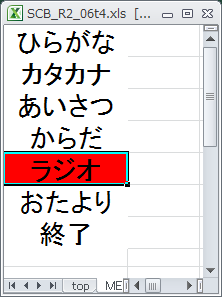
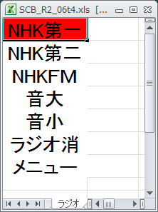
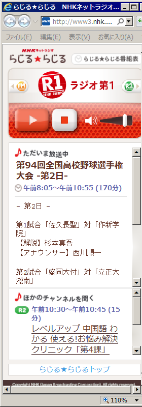
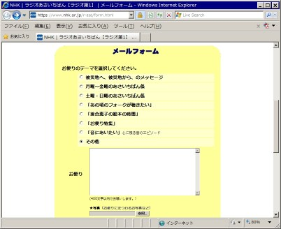
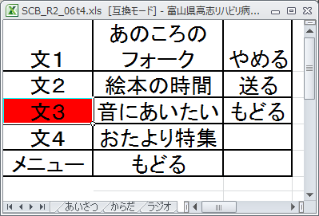

かならずお読みください→
ネットラジオ聴取、お便り投稿機能付き、しゃべる文字盤スキャン
Windows7対応版
Microsoft Excel for communication aids

しゃべる文字盤 左：メニュー文字盤 右：ラジオ文字盤

左：NHK第一 らじるらじる 右：ラジオ朝一番のお便りフォーム
意思疎通のために文字盤はずいぶん古くから使われているようで、いつ誰が作り使い始めたのかはよくわかりません。原理がシンプルですのであちこちで自然発生的に作られたのではないかと想像しています。この文字盤と同じ事がパソコンで可能になれば、介護者の時間的負担も軽くなり、ご本人も自分の体調やテンポに合わせて取り組みできる、つまりお互いに気兼ねが少なくなるメリットが期待できます。このアイデアがかたちになったのは、１９８０年代のようで、記録が残っています。
当時、パソコンは非常に高価で、個人で所有する例はあまりありませんでした。またパソコンを操作するにはある種の技能が必要で、これは当時就職に有利と若者に人気で、習得者は引く手あまたでした。福祉機器の購入に対する経済的補助制度もなく、これらのさまざまな課題をクリアできた幸運な人たちによってこれらの道具は使われていたと思われます。ハイテクという言葉もこの当時のものです。
以来３０年、今ではパソコンは小学生が学校で使い、一家に一台、一人に一台と普及し、特に珍しくもない見慣れた道具になりました。またコミュニケーションエイドも次々と新しい機種が現れ、制度も整備されました。1997年の伝の心、2003年のレッツチャットで一気に普及が進み、またマスコミに取り上げられる機会も増えました。この結果、病気について、患者さんについて、福祉機器について少しづつ知られるようになりました。
高名な宇宙物理学者でALS患者のホーキング博士がテレビ番組で紹介された時に、博士のために特別に作られた道具として紹介されたのが私にとって初めてのコミュニケーションエイドでした。ところがそれから何年もしないうちに、ごく普通（？）の患者さんが同様の道具を入手して使うようになりました。そして現在では、『会話が不自由な人にはコミュニケーションエイドを試してみましょうか』との話がごく普通に交わされるようになりました。
この間、日常でパソコンを使う人も大変増えました。ご家族、介護や看護の関係者、お友達などの手助けで、日本じゅうに何台ものコミュニケーションエイドが動きはじめました。なかには中学生のお孫さんや介護に不慣れな技術者のお父さんが活躍したこともありました。このように、ご本人とご家族の周りに人々が集まり、関わりあうなかで新しい人間関係が出来上がりました。こうなるとご本人抜きに話が進まなくなります。その結果、コミュニケーションエイドはますます使われるようになりました。このような循環により、在宅療養生活が少しづつ変わっていきました。これに似た話があちこちで聞かれました。
このような話をきくと、あの人にもこの人にも教えてあげたい、広めていきたいと考える人がふえます。コミュニケーションエイドを使うことでどなたの暮らしもいきいきと変えていけるように考えがちです。しかしなかにはうまくいかないこともあります。
ある病気の患者家族会は活動が活発です。そのみなさんが病気になって情報も交流も少なく在宅療養する 患者さんとご家族を尋ねて、会への参加を呼びかける活動に取り組まれました。その際、厳しい状況で在宅生活をしている人たちに出会ったことを教えてくれました。それは、もともと周囲との交際が少なく、日中の長い時間をひとりで過ごす人。家族以外との付き合いが少ない人。また家族の関係がうまくいっていない、なかには家族がいない人。それぞれに語り尽くせない事情が幾重にもかさなり、病気以外の重荷をたくさん抱えておられるひとが、よりによってそのような病気になってしまったのです。
また同じ時期、福祉機器関係の仕事をしている方からも同様のお話を聞きました。コミュニケーションが非常に限られ、他人と話をするのがあまりお好きではない。意思疎通の必要性をなかなか認めてくれず、説明しても自分には必要ないと、不自由もないとおっしゃる。
もともとの暮らしぶりがそうさせるのか、それとも病気の厳しい困難さでそうなるのでしょうか。事情は複雑でうかがい知ることもできませんが、もう来てくれるなと支援を拒否されることもあるそうです。
この問題には、社会のセーフティネットに関する議論も関係するかもしれません。また福祉機器普及がある段階に達すると、導入に困難を抱えた人が増えるというごく普通の現象なのかもしれません。しかしいずれにせよ、周囲がいくらがんばっても、ご本人がいやがっていると、話を先に進めることができません。コミュニケーションしたくない、必要がない、相手もいない、だからいらないと言われて、それでは失礼と引き下がるわけにもいかない理由があります。進行性の病気では徐々に機能低下します。やがて力も言葉も弱くなっていきます。とことん行き詰ってから気持ちが変わり、取り組みをはじめてもなかなかはかどるものではありません。体力や気力にゆとりがないと、操作スイッチの選択に手間も時間もかかりますし、タイミングをとる操作練習にも集中できません。また操作方法を覚えるにも、「これなんだっけ？」と尋ねたり、カンニングペーパーを目で追ったりできれば越えられるハードルが、壁のように行く手に立ちふさがります。なによりもご本人が苦しまれます。
進行性の病気ではなくても、老化は下り坂ですので基本的には同じ事です。準備は早めに、出来るうちにがやりたいものです。どうしてもやりたくない、人付き合いもきらいなら仕方がありません。このような人には、日常生活の楽しみを増やす機器や道具を実際に体験してもらいながら徐々に機器利用に理解を深め、また機器操作に習熟してもらうしかありません。
ところがこれまで類似の取り組みは大変に少なく、使用する機器もほとんど皆無です。そこでこのコンセプトの実施例として、ラジオ聴取機能と放送局への投稿機能を持つ『しゃべる文字盤』を開発しました。
ネットラジオとは何か？
インターネットを利用したラジオ放送が2011年からNHKで開始されました。『らじるらじる』と呼ばれ、東京地区の放送が『全国むけ共通番組』として流されています。これをパソコンやスマートフォンなどインターネット使って聴くことができます。民間放送はradikoの愛称で、NHKよりも早くインターネット放送が行われています。『らじるらじる』はこちらからどうぞ。radikoはこちらからどうぞ。
何をいまさら、ラジオ放送はラジオで聴けばいいというご意見もありましょう。しかし山やビルの陰で、またコンクリート住宅内で電波状態が悪かったり、海外の放送電波の影響で快適なラジオ聴取が困難な場合もあります。また『災害時にはラジオ』とは言われますが、皆さんラジオをお持ちですか？ラジオは若い人にはあまり普及していないとの調査もあります。（例えば、総務省メディアの保有状況） その一方でパソコンやスマホやiPadを始めとした、インターネット端末は急速に普及しています。これでは放送局もたまりません。せっかくの番組をより多くの人に聞いてもらうためにもインターネットラジオに期待が集まります。
また放送局にはもうひとつのメリットがあります。電波放送のための設備や機材に比較して、インタネット関係の機材、資材は低コストです。高いアンテナもいりません。聴取者（リスナ）にとって、雑音がないので音がきれいで遠くの放送も快適に聴けるメリットもあります。ただし、デジタル特有のデコード時間のため、時報がやや遅れるなどの欠点もあります。当院でもラジオをもって入院する人がたくさんおられます。ベッドサイドでラジオを見かける機会も少なくありません。かつてはラジオは若者文化と関係深いメディアでしたが、当時の若者の皆さんも今では相応の年齢になっておられます。このような背景もあり、何年か前より深夜放送を中心にゆっくりした語り口と懐かしい選曲など、大人向けの質の高い番組作りが進められました。健康や病気や人生、生や死に関する話題も多く、この点で若者むけ番組とは一線を画しています。
ところがラジオは高齢の方が使うにはいくつか問題もあります。まずあまりにも小型でスイッチや表示が見えにくいところです。また小さいスイッチはスマートではありますが、操作しにくいのも事実です。一時バリアフリーラジオも販売されましたが、その後品切れのままとはよほどビジネスは難しいものなのでしょうか。麻痺が重い人には、環境制御装置等も検討しますがどうもラジオとは相性がよくありません。環境制御装置で利用できるラジオ、即ちリモコンで操作できるラジオとなると結局大型のCD、MD（どちらのメディアも過去のものになりつつあります）プレーヤのラジオがほとんどでした。大きなボディー、大きなスピーカー、もちろんよく聞こえるのですが、ベッドの耳元で聴く用途にはちょっと大げさすぎて値段もはります。そもそもラジオは小型ですので手元で聴くことが多く、リモコンの必要が大きくありません。このようにラジオはこれまでちょっと使いにくい道具でした。ネットラジオはこの問題を一気に解決しました。パソコンやスマホにさいくの余地があるので不便を解決する手段が使えます。またこれらによって新しい使い方を開くきっかけになると思われます。
『レッツチャット練習用しゃべる文字盤スキャン』にラジオ聴取モジュールと投稿モジュールを増築する方法でサンプルを作りました。
『ネットラジオ聴取、お便り投稿機能付き しゃべる文字盤スキャン』の試作品はこちらからダウンロードできます。方法、下記の青文字を『右クリック』→『対象をファイルに保存』でパソコンに保存できます。
『ネットラジオ聴取、お便り投稿機能付き しゃべる文字盤スキャン』 （SCB_R2_07_2.xls）
このエクセルファイルの各ワークシートには保護をかけてありません。変更や改変はそのまま行ってください。
もし、いろいろやった結果、正常な動作をしなくなった場合は、再度ダウンロードしてください。ご注意ください ここで紹介する『ネットラジオ聴取機能、おたより投稿機能付きしゃべる文字盤スキャン』を使用するためには、『レッツチャット練習用しゃべる文字盤スキャン』と同様の準備が最初に必要です。もしすでに『レッツチャット練習用しゃべる文字盤スキャン』が問題なく動作している場合にはこれらの操作は必要ありません。
- Aquest社のAquesTalkのインストールして人工音声を使えるようにする
Softalkのインストール しゃべる文字盤で作った文を読み上げる際につかいます
文書ファイルの準備
エクセルの設定変更
外部スイッチをパソコンとつなぐハードとソフトの準備
などの準備が必要です。この件については、こちらのページを参照ください。
以上の準備に加えて、音量調整用のソフトが必要ですので、インストールします。
CommandVC MOS Command Volume Controllerのインストール方法
『ネットラジオ聴取、お便り投稿機能付き しゃべる文字盤スキャン』では音量調整をするために、MOSさんの CommandVCを使わせていただきました。この機能を使うためには使用前にインストールしてください。
CommandVC は、http://mosprivpro.blog.fc2.com/blog-entry-2.htmlより入手できます。zipファイルを解凍しできた、mcvc.exeを C:\ProgramFiles\mcvcにコピーすれば完了です。ちなみに動作確認は、ver3.7.0とver4.0.0で行いました。
表示の調整
はじめて『しゃべる文字盤』を起動すると、エクセルも、メモ帳も以前閉じた位置と多きさで開きます。もしかしたら重なって見えにくいかもしれません。マウスなどを使って表示位置の調整が必要です。今回はブラウザでラジオの受信とお便りの送信を行いますが、この表示位置は、ラジオがOPTIONシートに、おたより送信はコード内に記述しました。多種多様なモニターが使われている現状では、誰でも満足できる設定にしてお送りすることが事実上不可能ですので、お使いのモニターに合わせた表示位置の調整が必要です。

お便り文字盤
主な機能
メニュー文字盤の『ラジオ』を選択すると、ラジオ文字盤（このページの一番上の右の図参照）が開きます。ここにラジオ関係の機能があります。ラジオのオンオフ、選局、音量の調整ができます。文を作っている最中でも、ラジオを聴いたり、消したり、局を切り替えたり、音量を調整したりできます。サンプルで聴取できるのは、NHK第一、NHK第二、NHKFMの３局です。この他に、民間放送のインターネットラジオとしてradikoがあります。しかしradikoは電波による放送が行われている地域でしか聴けません。既存の電波放送を保護するためにこのような規制をしているようです。このような事情から、radikoをお聞きになりたい場合には、各放送エリアごとの取り組みが必要になります。サンプルにはNHK第一の朝の番組のホームページ宛てにおたよりを送る機能をつけました。メニューから『おたより』を選ぶと、お便り文字盤が開きます。（上の図）たくさんの番組におたよりできるように、盛りだくさんにすると非常に見にくく、使いにくくなります。そこで程々にして普通の人が使いやすいようにあえてシンプルにしました。さらにご希望のある場合は、お使いになる方と、技術サポートする方が相談して仕様を決めて作業してください。その際、このサンプルのコードは見えるようにしていますので、どのようにお使いいただいても結構です。作業する方の腕と責任の範囲で、参考、改造、変造し、また再配布していただいてかまいません。
もし間違いや改善点が見つかりましたら、どうぞ教えてください。参考にして私もまだまだ勉強してきたいと思います。どうぞよろしくお願いいたします。使う人の好みもあるでしょうから、ここから先はそれぞれ分担でやるしかないようですし、またその方があとあとの人材育成にもつながるのではないかと考えています。
おわりに
看護婦さんと結婚したらやさしく看病してもらえるかと思ったら、そんなの病気のうちに入らないと言われ、あてが外れた愉快な友人がいます。医療関係者と一般人では病気に対する意識が大きく違います。日常的に大きな病気やそして結果としての死と接しているからでしょうか。しかし一方でそのようなことを気にしていたら仕事にならないという意見ももっともなことです。
意思伝達装置が必要になること自体はその人や家族にとって一生の一大事です。苦しみも不安も最大級であることは間違いありません。そんな気持ちに整理をつけ、行動を起こすための時間は人によって相当違います。なかには大変苦労される方もおられます。あとまで引きづることもあります。片や医療関係者にとって、患者への配慮は当然としても、一方でやるべきことを着々とすすめることが求められます。ひとりひとりは大事ですが、次の人もそのまた次の人も待っているのです。
この両者のギャップがうまくまとまらずこじれることもあります。ろくに治療もしないでこの病気は治りませんと決め付けると不満を持つ人もいます。治らないならはやく死にたいと嘆き悲しんだり、投げやりになったり、堂々巡りから抜けられなくなる人もいます。その一方で、受容がなかなかできなくてとため息がでるひともいます。残念なことに、このようなすっきりしていない気分の時にコミュニケーションエイドの話が始まることがよくあります。
コミュニケーションと言いますが、通常このような状況になると人は一般的に『口もききたくない』状態になります。しかしここで、お互いにコミュニケーションしたい相手（たとえば家族や友人）がいれば話は違ってきます。あまり出来のよろしくない道具でも何とか使ってこの目的を達成したいと思うならば、コミュニケーションもなんとかできないものでもありません。またこの取り組みで好ましい結果がもたらされることもよくあります。このように目的がありその実現のための手段としてコミュニケーションの価値も明らかであるなら、モノとしての福祉機器と技術支援だけではなく、使い方や活かし方もセットにしたハウツーユース支援が効果的になります。趣味や趣向に沿った提案や、過去の活用事例の紹介なども参考になることでしょう。
他人とのつきあいが少なく人間関係が限られる人でも、たとえ交わす言葉が少なくても、相手が遠く離れていても、その言葉に目的があり、意図があるならそのコミュニケーションの価値は何ら損なわれません。病床にあっても（病床にあるからこそ）電子メールのやり取りをしている患者さんは実際随分おられます。
片や周囲とのコミュニケーションがほとんど無い人もいます。もともと口数の少ない人。人付き合いが好きでない人、人間関係が良好ではない人もいます。原因がはっきりしないがコミュニケーションが少ない人もいます。たとえ声が出て話ができてもコミュニケーションできない人はあちこちにいます。自分のことは言うけれど相手のことは聞かない人、反対に相手のことは聞くけれど自分のことは言わない人。主張や希望がかなえられないと口数が少なくなるのは普通です。特に思わしくない状況では、この状態になりやすくなります。これといった目的もなくコミュニケーションエイドの練習をしても熱が入らないのはごく普通のことです。このなんとなく乗りきれなくて、そのまま使わなく、使えなくなることも少なくありません。
このようにコミュニケーションは精神的心情的人間的な活動で、道具があって練習すれば誰でもできるわけではありません。それでも、
１ コミュニケーションしたくなった時に困らないように、身体のトレーニング、機器の選択、使用方法の学習する機会を作る。
２ 言葉のやり取り以外にＱＯＬを改善する方法や用途を開発する。
こんな目的で『ネットラジオ聴取、お便り投稿機能付き しゃべる文字盤スキャン』を作りました。
なんとなく乗り気になれない人には、それなりに楽しめて、煩わしいこともない、いやならいつでもやめられる、再開もできる。そんな気軽なところから気楽に取り組んでいただくのがよろしいでしょう。
効率的でも画一的でも理想的でもない選択肢もどこかで準備しておくべきだと思います。このような取り組みの中から新しい提案や価値観が現れるのかもしれません。この創造に取り組む人が今後増えることを期待しています。
ラジオって古風な道具ですが、どうしてこんなに長続きしているのでしょうか。きっと他にはない、いいところがあるのでしょう。
2014/05/28 しゃべる文字盤を多色表示可能に変更
2013/05/24 公開研究企画課リハ工学科にもどる